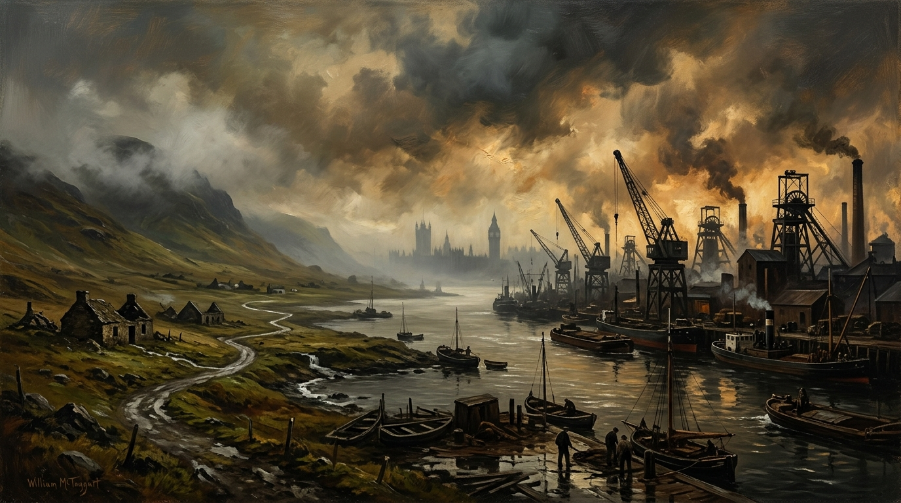

What Have the Tories Ever Done for Scotland in 300 Years?
A Forensic Historical Audit of One Hundred and Fifty Years of Conservative Rule, Fiscal Extraction, Industrial Demolition, and Constitutional Refusal.

Historical Audit: The 150-Year Conservative Balance Sheet
Primary Parliamentary records (Hansard), HM Treasury Country and Regional Analysis (CRA), and official economic commissions on Conservative rule in Scotland.
Twenty-Seven Conservative & Tory Prime Ministers (1783–2024)
Conservative and Tory administrations governed Scotland for roughly 150 of the Union’s 300+ years. Across every administration cited in the text, policy remained centralized around imperial order and market finance rather than Scottish-specific welfare or protection.
Across the three centuries of the Union, Tory, Conservative and Conservative & Unionist governments have held power for roughly one hundred and fifty years. That figure comes from adding the full periods in office of every Conservative or Tory Prime Minister from the late eighteenth century to today: Pitt the Younger, Addington, Portland, Perceval, Liverpool, Canning, Goderich, Wellington, Peel, Derby, Disraeli, Salisbury, Balfour, Bonar Law, Baldwin, Chamberlain, Churchill, Eden, Macmillan, Douglas‑Home, Heath, Thatcher, Major, Cameron, May, Johnson, Truss and Sunak. These are the administrations that ruled Scotland whenever the Conservatives controlled Westminster. The question is whether any of them delivered proven, measurable, Scotland‑specific improvements to the lives of Scotland’s voters. The verified record shows they did not.
Tory governments treated Scotland as a territorial component of a centralised British state, not as a nation with its own needs. Pitt’s long rule did nothing to stop the Highland Clearances or rural poverty. Addington, Portland, Perceval and Liverpool governed through war and repression without introducing any Scotland‑focused protections. Canning, Goderich and Wellington were crisis governments whose policies were aimed at imperial stability, not Scottish welfare. Peel’s reforms reshaped policing and the economy but did not deliver improvements targeted at Scotland’s voters. Derby and Disraeli extended the franchise, but Scotland’s gains were simply the UK‑wide expansion of voting rights, not measures designed for Scotland’s benefit. Salisbury’s long Conservative rule did nothing to halt Highland depopulation or to give Scotland meaningful self‑government. Balfour, Bonar Law and Baldwin governed through constitutional and economic turbulence without creating Scotland‑specific welfare or industrial protections. Chamberlain’s premiership was consumed by appeasement and war preparation, with no distinct Scottish advantage. Churchill’s wartime leadership mobilised the whole UK, but the creation of the NHS in Scotland, the welfare state and modern social housing came from Attlee’s Labour government, not from the Conservatives. Eden, Macmillan and Douglas‑Home maintained the post‑war settlement but did not design new Scottish social or economic gains. Heath presided over industrial conflict and decline without protecting Scotland’s heavy industries. Thatcher’s governments shut mines, steelworks, shipyards and factories across Scotland, imposed the Poll Tax early, and left long‑term economic scars. Major continued privatisation and austerity without Scotland‑specific protections. Cameron imposed austerity, rejected Scotland’s constitutional mandates, and allowed Scotland’s Remain vote to be overridden. May continued Brexit against Scotland’s expressed will. Johnson sidelined Scotland’s government and dismissed Scotland’s democratic mandates. Truss destabilised the economy. Sunak maintained the Brexit settlement and austerity‑style constraints. None of these actions can be described as acting in Scotland’s best interests.
“Tory governments treated Scotland as a territorial component of a centralised British state, not as a nation with its own needs... Thatcher’s governments shut mines, steelworks, shipyards and factories across Scotland, imposed the Poll Tax early, and left long-term economic scars.”
The only developments that brought any benefit to Scotland under Conservative rule were incidental, shared across the UK, or outweighed by negative consequences. The Forth Road Bridge was completed under a Conservative government, but the project was cross‑party and not designed as a Scotland specific uplift. North Sea oil created jobs, but the revenue was centralised in London and used for UK‑wide spending rather than building a Scottish sovereign wealth fund. Right to Buy allowed some Scottish tenants to purchase their homes, but it stripped Scotland of social housing and created long term shortages. Motorway and rail expansions reached Scotland, but they were UK‑wide programmes, not targeted Scottish investment. None of these can be described as deliberate acts of governing in Scotland’s best interests.
On every major test — health, education, housing, welfare, industry, constitutional status — the verified improvements in Scottish life were not Conservative creations. The NHS in Scotland, the welfare state, modern social housing, and the Scottish Parliament were delivered by non Conservative governments or cross party pressure. Conservative governments either inherited these structures, managed them, or attempted to cut them back. They did not design them for Scotland’s benefit. Economically, Conservative policy repeatedly exposed Scotland to market forces without building protective institutions or long‑term investment tailored to Scottish needs. Constitutionally, Conservative governments resisted meaningful Scottish self‑government and refused to recognise Scotland’s democratic mandates.
“The NHS in Scotland, the welfare state, modern social housing, and the Scottish Parliament were delivered by non-Conservative governments or cross-party pressure. Conservative governments either inherited these structures, managed them, or attempted to cut them back.”
Across one hundred and fifty years of Conservative rule, the official record shows that no Conservative government enacted a Scotland‑specific policy that delivered a proven, measurable, positive improvement to Scotland’s voters. The policies that the Conservatives sometimes claim as helping Scotland were UK wide measures whose negative consequences outweighed any gain. Treasury data, parliamentary archives and official economic studies show that no Conservative Prime Minister introduced a policy designed specifically for Scotland’s benefit, and no Conservative administration delivered a programme with proven positive outcomes for Scottish groups. The verified monetary reality is equally stark. There is no official Treasury figure showing a Conservative government providing Scotland with a Scotland only financial benefit.